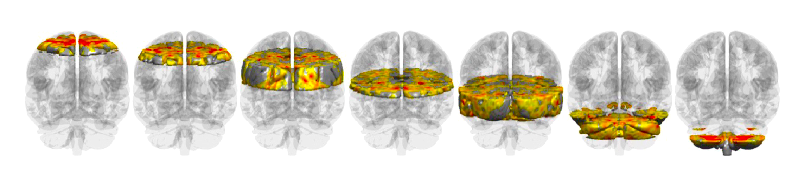

A lightweight MATLAB toolbox for human fMRI analysis. All functions operate on a single, fixed MNI152 brain vector. No frameworks, no compiled code, no hidden steps. Purpose-built for continuous-feature, naturalistic paradigms, where conventional GLM approaches fall short. From signal preprocessing through statistical inference and visualization. In active use since 2012. Now publicly available.

Every module shares the same brain vector format; mix and match freely, no conversion needed. Module names and counts follow the toolbox's own Contents.m.
fmri_bwlabel, pure MATLAB. A patched NIfTI reader ships with the toolbox.Several sources contribute more than one map: the Craddock parcellation at five resolutions, the cerebellar atlas in two registrations. Call fmri_atlas(n) for any of them, n = 1 to 19. No external toolbox required.
No compilation, no configuration files, no package manager.
Requires MATLAB R2019a or later. No MathWorks toolboxes and no SPM; the NIfTI reader is bundled.
Cited in 20+ peer-reviewed publications across leading neuroscience journals.
+ 14 additional publications in Frontiers in Human Neuroscience, Cortex, PLOS ONE, Brain Sciences, and others.